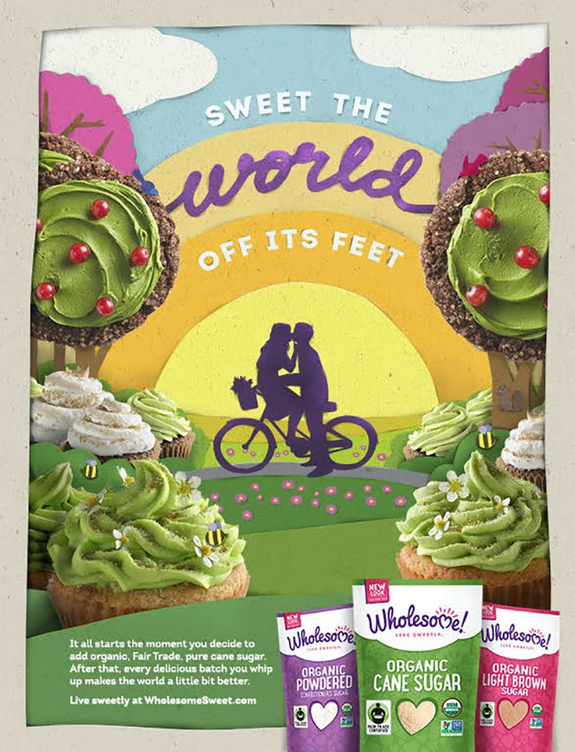

<!DOCTYPE html>
<!--[if IE 8]><html class="no-js lt-ie9" lang="en"> <![endif]-->
<!--[if gt IE 8]>
<!-->
<html class="no-js" lang="en">
<!--<![endif]-->

<head>

    <!-- Basic Page Needs
  ================================================== -->
    <meta charset="UTF-8">
    <meta name="referrer" content="strict-origin" />
    <title>Maddie & Maisie social posts</title>
    <meta name="description" content="">
    <meta name="author" content="Mary Lou Hidalgo | Freelance Copywriter | Messaging Strategist">

    <!-- Mobile Specific Metas
  ================================================== -->
    <meta name="viewport" content="width=device-width, initial-scale=1, maximum-scale=1">


    <!-- CSS
  ================================================== -->
    <!-- <link rel="stylesheet" href="css/base.css" />
    <link rel="stylesheet" href="css/skeleton.css" />
    <link rel="stylesheet" href="css/layout.css" /> -->
    <!-- <link rel="stylesheet" href="css/font-awesome.css" />
    <link rel="stylesheet" href="css/ionicons.css" />
    <link rel="stylesheet" href="css/retina.css" /> -->
    <!-- <link rel="stylesheet" href="css/custom.css" /> -->
    <link rel="stylesheet" type="text/css" href="https://cdn.jsdelivr.net/npm/slick-carousel@1.8.1/slick/slick.css" />
    <style>
        img {
            max-width: 360px;
            margin: 0 auto;
        }
        /* Arrows */
        
        .slick-prev,
        .slick-next {
            font-size: 0;
            line-height: 0;
            position: absolute;
            top: 50%;
            display: block;
            width: 20px;
            height: 20px;
            padding: 0;
            -webkit-transform: translate(0, -50%);
            -ms-transform: translate(0, -50%);
            transform: translate(0, -50%);
            cursor: pointer;
            color: transparent;
            border: none;
            outline: none;
            background: transparent;
        }
        
        .slick-prev:hover,
        .slick-prev:focus,
        .slick-next:hover,
        .slick-next:focus {
            color: transparent;
            outline: none;
            background: transparent;
        }
        
        .slick-prev:hover:before,
        .slick-prev:focus:before,
        .slick-next:hover:before,
        .slick-next:focus:before {
            opacity: 1;
        }
        
        .slick-prev.slick-disabled:before,
        .slick-next.slick-disabled:before {
            opacity: .25;
        }
        
        .slick-prev:before,
        .slick-next:before {
            font-family: 'slick';
            font-size: 20px;
            line-height: 1;
            opacity: .75;
            color: white;
            -webkit-font-smoothing: antialiased;
            -moz-osx-font-smoothing: grayscale;
        }
        
        .slick-prev {
            left: -25px;
        }
        
        [dir='rtl'] .slick-prev {
            right: -25px;
            left: auto;
        }
        
        .slick-prev:before {
            content: '←';
        }
        
        [dir='rtl'] .slick-prev:before {
            content: '→';
        }
        
        .slick-next {
            right: -25px;
        }
        
        [dir='rtl'] .slick-next {
            right: auto;
            left: -25px;
        }
        
        .slick-next:before {
            content: '→';
        }
        
        [dir='rtl'] .slick-next:before {
            content: '←';
        }
    </style>

    <!-- Favicons   
	================================================== -->
    <link rel="shortcut icon" href="favicon.png">
    <link rel="apple-touch-icon" href="apple-touch-icon.png">
    <link rel="apple-touch-icon" sizes="72x72" href="apple-touch-icon-72x72.png">
    <link rel="apple-touch-icon" sizes="114x114" href="apple-touch-icon-114x114.png">

    <!-- scripts preload
	================================================== -->
    <!-- <script src="https://use.fontawesome.com/8144666f57.js"></script> -->
    <script type="text/javascript" src="js/modernizr.custom.js"></script>

</head>

<body>


    <!-- Primary Page Layout
	================================================== -->


    <!-- <div class="section padding-bottom background-white">
        <div class="container">
            <div class="six columns">
                <div class="img-wrap">
                    
                </div>
            </div>
            <div class="six columns">
                <div class="img-wrap">
                    
                </div>
            </div>
        </div>
    </div> -->

    <!-- <div class="section background-white">
        <div class="container">
            <div class="eight columns offset-by-two" data-scroll-reveal="enter bottom move 60px over 0.5s after 0.1s">
                <div class="big-text-page">
                    text goes here.
                </div>
            </div>
        </div>
    </div> -->


    <div class="slick-container">
        <div class="slick-center">
            <div class="swiper-slide">
                

            </div>
            <div class="swiper-slide">
                
            </div>
            <div class="swiper-slide">
                
            </div>
            <div class="swiper-slide">
                
            </div>
            <div class="swiper-slide">
                
            </div>
            <div class="swiper-slide">
                
            </div>
            <div class="swiper-slide">
                
            </div>
            <div class="swiper-slide">
                
            </div>
            <div class="swiper-slide">
                
            </div>
            <div class="swiper-slide">
                
            </div>
        </div>
    </div>


    <!-- JAVASCRIPT
    ================================================== -->
    <script type="text/javascript" src="js/jquery-2.1.1.js"></script>
    <!-- <script type="text/javascript" src="js/royal_preloader.min.js"></script>
    <script type="text/javascript" src="js/retina-1.1.0.min.js"></script>
    <script type="text/javascript" src="js/jquery.easing.js"></script>
    <script type="text/javascript" src="js/menu.js"></script>
    <script type="text/javascript" src="js/tipper.js"></script>
    <script type="text/javascript" src="js/scrollReveal.js"></script>
    <script type="text/javascript" src="js/fitvids.js"></script>
    <script type="text/javascript" src="js/parallax.js"></script>
    <script type="text/javascript" src="js/custom-project.js"></script>
    <script src="https://kit.fontawesome.com/a062562745.js" crossorigin="anonymous"></script> -->
    <script type="text/javascript" src="https://cdn.jsdelivr.net/npm/slick-carousel@1.8.1/slick/slick.min.js"></script>


    <script type="text/javascript">
        $(document).ready(function() {

            $('.slick-center').slick({
                centerMode: true,
                centerPadding: '60px',
                slidesToShow: 3,
                autoplay: true,
                autoplaySpeed: 2000,
                responsive: [{
                    breakpoint: 1250,
                    settings: {
                        arrows: true,
                        centerMode: true,
                        centerPadding: '40px',
                        slidesToShow: 2
                    }
                }, {
                    breakpoint: 845,
                    settings: {
                        arrows: true,
                        centerMode: true,
                        centerPadding: '0',
                        slidesToShow: 1
                    }
                }, {
                    breakpoint: 480,
                    settings: {
                        arrows: false,
                        centerMode: true,
                        centerPadding: '0',
                        slidesToShow: 1
                    }
                }]
            });
        });
    </script>

    <!-- End Document
================================================== -->
</body>

</html>